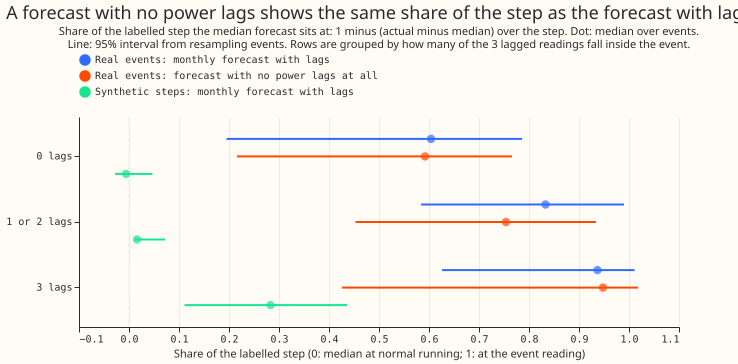
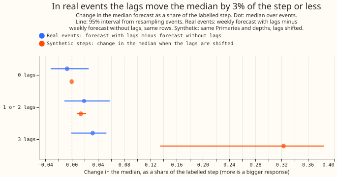
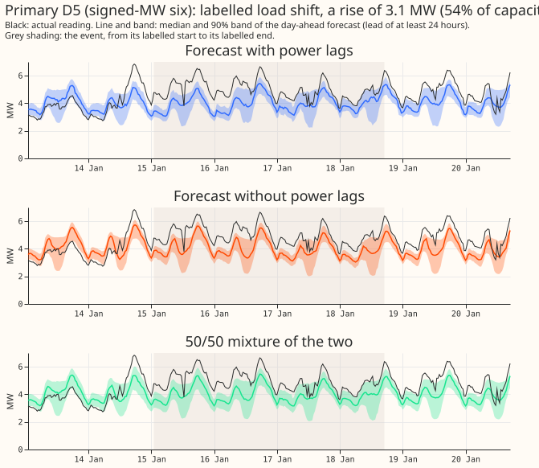
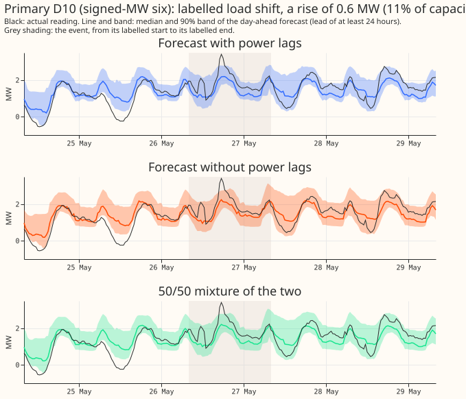
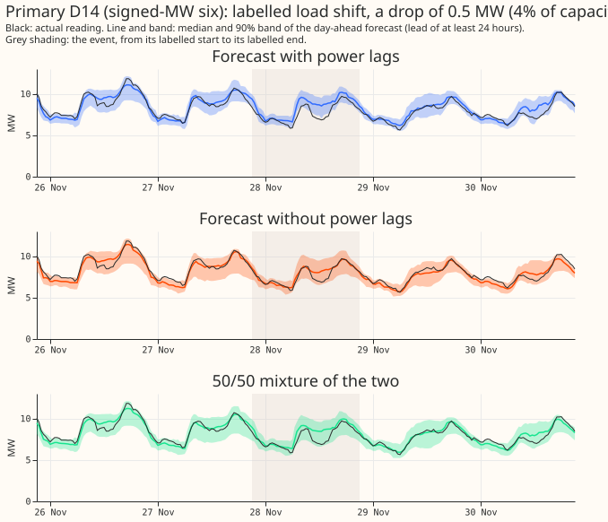
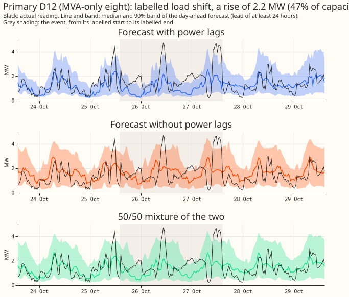
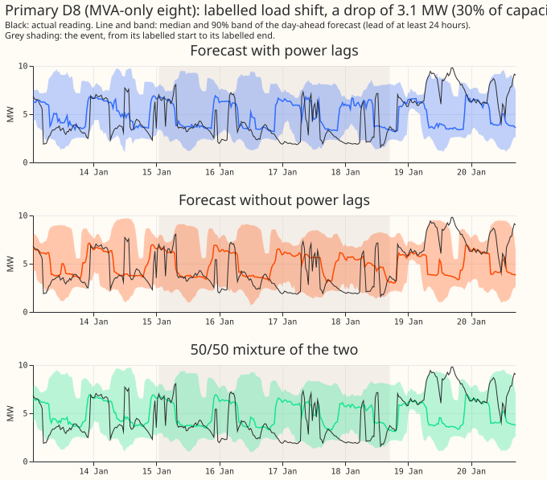
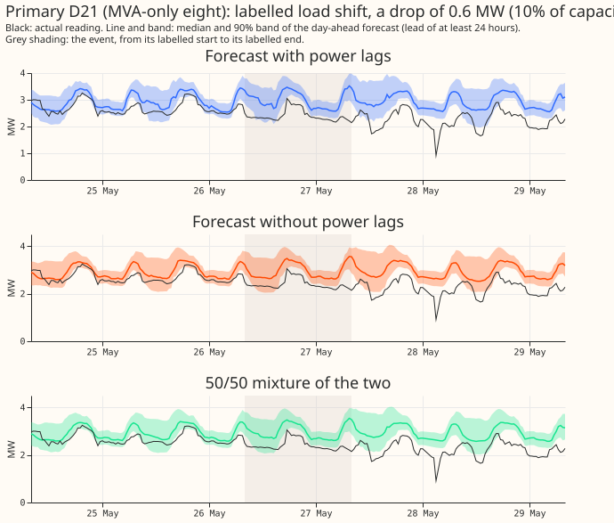

Experiment 401: real and synthetic load-shift median share, and a fixed mixture of two forecasts
In real load-shift events the lagged power readings barely move the forecast. A load-shift event is a period, labelled by hand, in which demand at a Primary substation shifts by a labelled number of megawatts because load moved to or from a neighbouring substation. Experiment 395 reported that the median forecast reaches 0.94 of the labelled step when all 3 lagged readings lie inside the event. That share is not a response to the lags: a forecast with no power lags at all reaches 0.95. The weekly XGBoost forecast with lags moves its median by only 0.03 of the step more than the weekly forecast without lags, on the same rows. Verdict: partly supported.
A fixed 50/50 mixture of the forecast with lags and the forecast without lags scores about as well as the learned blend of experiment 400 at the six Primaries whose telemetry is signed megawatts (D5, D9, D10, D11, D14, D16), and 0.05 points of CRPS worse (up to 0.12) at the eight whose telemetry is MVA only (D2, D3, D4, D8, D12, D19, D21, D22). The page calls these groups "the six" and "the eight". CRPS is the continuous ranked probability score, in points of effective capacity. The next experiment should test whether the lags matter in real events at all (see the end of the page).
We asked two questions about the weekly XGBoost forecast of Primary-substation demand. Job 1.
Experiment 395 found that adding a synthetic step to the lagged power readings moves the median
forecast by 37% of the step. The same experiment found that, in labelled real events, the median
reaches 0.94 of the event reading. Why do the two figures disagree? We re-ran the comparison on the
same events, with the same depth
and the same Primary, and tested each possible cause by one small calculation. Job 2. Can
experiment 400's learned blend of the two forecasts be replaced by a fixed weight? We scored fixed
weights, a weight per lead time, and two ways of mixing (mixing the distributions, or averaging
their quantiles) on the stored forecasts. Nothing was refitted. The synthetic arm re-predicts
experiment 391's plain monthly boosters (b0); the weekly bundle's boosters are not stored, so the
real arm uses experiment 381's monthly control. Part E and Part H of
experiment 395 and experiment 400's
mixture code are reused (named in the Plan).
Figures
Figure 1 compares the shares. Figure 2 compares the response to the lags. The six time series plots show real events at both metering groups: the three Primaries on the first three plots are in the signed-MW six, the last three in the MVA-only eight.








Results
Job 1: real against synthetic share
Each figure is a median over events. The 95% intervals come from resampling events. The rows are
those whose target time falls inside the event, with lead under 240 hours and flagged half-hours
dropped. Table labels (R1, S1, B1 to B5) name the tables printed by e00401_share.py, saved as
printed_share.txt in the private work folder.
- Real shares reproduce experiment 395 Part H. Monthly control: 0.604, 0.833, 0.937 at 0, 1 or 2, and 3 lags (52, 27, and 16 events). Weekly bundle: 0.523, 0.830, 0.940.
- A forecast with no power lags reads almost the same. The lagless forecast (experiment 383's raw arm) reads 0.592, 0.754, 0.948 on the same events (table R1). The forecast without lags never sees a lag, yet its share at 3 lags is 0.948, so the share does not measure the response to the lags.
- Synthetic steps of the same depth and Primary move the median little. The synthetic observed share of the monthly boosters is -0.006, 0.016, and 0.283 at 0, 1 or 2, and 3 lags (the same 52, 27, and 16 events). The response share (Part E's definition) is 0.000, 0.014, and 0.323 (table S1). So depth and rows are not what separates 0.37 from 0.94.
- The 0-lag share of 0.52 to 0.60 is the labelled step against the measured step. A forecast
blind to the event reads
1 - measured step / labelled step. The measured step is 0.62 times the labelled step (median over 175 event-Primary pairs, none of opposite sign). With the measured step in place of the labelled step the monthly control's 0-lag share falls from 0.591 to 0.244, on the 51 events with a same-sign measured step (table B1), and the lagless forecast's share (0.592) matches the monthly control's, so the lags contribute nothing at 0 lags (table B2). Forecast noise does not move the median (the synthetic 0-lag share is -0.006, with an interquartile range over rows of 0.72, table B3). Events under a day read 0.30 and events over 7 days read 0.97 at 0 lags (table B4), so the events' own length matters: a long event is mostly inside the training window. - The response to the lags in real events is about 0.03 of the step. Weekly forecast with lags minus weekly forecast without lags, per row, then medians over events: -0.007 (-0.032 to +0.026) at 0 lags, +0.019 (-0.011 to +0.058) at 1 or 2, +0.032 (-0.001 to +0.053) at 3 (table B5). The synthetic response at 3 lags is 0.338 (0.299 to 0.375) over all 184 events.
Job 2: fixed mixture, CRPS in points of effective capacity (e00401_report.py)
Rows: days 1 to 10, valid times from 2025-10-01, 96 flagged exact-zero half-hours dropped (D12 8, D18 24, D22 40, D8 24). Event-lag rows are those with 1 to 3 lags inside a corrected event and the target outside; 20,327 rows (28 events) at the six, 20,911 (19 events) at the eight.
| CRPS minus forecast with lags (95% interval) | Six, event-lag rows | Eight, event-lag rows | Six, outside events | Eight, outside events |
|---|---|---|---|---|
| Mixture w = 0.3 | -0.99 (-2.41 to +0.06) | +0.28 (+0.00 to +0.56) | +0.027 (-0.027 to +0.083) | +0.059 (+0.023 to +0.096) |
| Mixture w = 0.5 | -0.90 (-2.15 to -0.01) | +0.14 (-0.04 to +0.32) | -0.019 (-0.054 to +0.016) | +0.004 (-0.022 to +0.029) |
| Mixture w = 0.7 | -0.66 (-1.53 to -0.03) | +0.05 (-0.05 to +0.15) | -0.034 (-0.055 to -0.014) | -0.021 (-0.038 to -0.005) |
| Mixture, per-lead weight | -0.62 (-1.45 to -0.03) | +0.04 (-0.04 to +0.12) | -0.033 (-0.051 to -0.017) | -0.028 (-0.043 to -0.014) |
| Quantile average w = 0.5 | -0.82 (-2.00 to +0.02) | +0.18 (-0.03 to +0.38) | -0.024 (-0.063 to +0.017) | +0.008 (-0.025 to +0.039) |
| Learned blend B2 (experiment 400) | -0.75 (-1.76 to -0.03) | +0.09 (-0.05 to +0.22) | -0.029 (-0.056 to -0.003) | -0.013 (-0.033 to +0.007) |
- Headline pair, 99.58% intervals (family level of 5%, k = 12 contrasts). Mixture w = 0.5 minus B2 on event-lag rows: -0.151 (-0.487 to +0.042) at the six, +0.050 (-0.013 to +0.122) at the eight. Outside events: +0.010 (-0.002 to +0.024) at the six, +0.017 (+0.008 to +0.027) at the eight. Mixture w = 0.5 minus the forecast with lags outside events: -0.019 (-0.071 to +0.032) at the six, +0.004 (-0.034 to +0.040) at the eight.
- The pre-registered decision rule is met at the six and not at the eight. The rule asks for an upper interval end of at most +0.1 on event-lag rows and at most +0.05 outside events. At the six the upper ends are +0.042 (mixture w = 0.5 minus B2, event-lag rows), +0.024 (the same arm outside events), and +0.032 (minus the forecast with lags outside events). At the eight the event-lag upper end is +0.122, over the +0.1 margin, although the interval includes zero. The claim is interim until the maintainer reads the audit findings (see Checks).
- One event, at D16, drives the six's gain over the forecast with lags. With each Primary left out in turn, mixture w = 0.5 minus the forecast with lags on event-lag rows stays between -0.90 and -1.73 except without D16, where it is -0.179 (-0.517 to +0.032). The contrast against B2 survives without D16 (-0.014, -0.076 to +0.033). D9 has no event-lag rows, so the six has five Primaries with event-lag rows.
- The per-lead weight on the forecast with lags falls from 0.90 at day 1 to 0.62 at day 10 (mean over months). The per-lead arm therefore gives no gain on event-lag rows (-0.62 against -0.90 for w = 0.5), and gains 0.001 (six) and 0.007 (eight) points over the best fixed weight on all rows (prediction P5).
- Mixing distributions beats averaging quantiles only slightly. Mixture minus quantile average at w = 0.5 is -0.079 (-0.160 to +0.006) at the six and -0.032 (-0.071 to +0.004) at the eight on event-lag rows.
- Widening by 1.15 changes no sign on event-lag rows. The widened arm is the raw arm with each quantile moved from the median by 1.15 times its distance. Differences against the widened forecast with lags are within 0.1 of the raw differences (for example w = 0.5 mixture: -0.82 at the six, event-lag rows). B2 is raw only. Outside events at the eight, the widened mixture is worse than the widened forecast with lags by +0.028 (+0.006 to +0.052), against +0.004 raw (audit re-derivation).
- One Primary, D16, drives the six's gain. Mixture w = 0.5 minus the forecast with lags on event-lag rows per Primary, at the six: D16 -3.35 (4,644 rows), D5 -0.12 (10,460), D10 -0.45, D14 -0.28, D11 +0.03. D18 (neither group) is +4.18 (198 rows) and D12 (an eight Primary) is +0.61.
- The mixture scores worse at D15 and D18, which are in neither group. Outside events the w = 0.5 mixture is +2.33 CRPS against the forecast with lags at D15 and 0.94 worse than B2. The cause is probably a poor forecast without lags there; the printed report does not show it.
- The mixture moves the median less sharply at event onsets than the forecast with lags. The largest half-hour change of the median across an event onset, 95th percentile (points of capacity): forecast with lags 15.8, lagless 16.0, w = 0.5 mixture 12.9, B2 13.3 (384 onsets).
- On cold nights the mixture gains more at the six. Event-lag rows, 538 rows in 10 events: mixture w = 0.5 minus lags -1.71 (-3.08 to -0.06); eight: +0.24 (-0.09 to +0.49).
- The mixtures do not lower avoidable curtailment cost during events. The totals are GBP over the six signed-MW Primaries, at a limit of 0.9 times the maximum. During events the w = 0.5 mixture costs 89,000 GBP more than the forecast with lags (6.65 million against 6.56 million GBP) and B2 costs 61,000 GBP more. The GAM stack costs 3.74 million GBP less.
- Curtailment cost in the 7 days after events and across all rows. After events the w = 0.5 mixture is 3,800 GBP and B2 is 3,000 GBP below the forecast with lags, and the stack is 112,000 GBP above. Across all rows the w = 0.5 mixture is 102,000 GBP and B2 is 40,000 GBP above the forecast with lags, and the stack is 4.87 million GBP below.
- Widening by 1.15 lowers cost on all three arms alike. The widened forecast with lags is 81,700 GBP lower during events and 207,100 GBP lower across all rows. The widened w = 0.5 mixture is 61,200 GBP lower during events, and the widened per-lead mixture is 243,300 GBP lower across all rows, each against the raw forecast with lags. The reduction comes from the widening, not from the mixing, and the widened arms cost 2,000 to 3,600 GBP more in the 7 days after events.
- Tail calibration (six, event-lag rows). The q95 coverage is 0.884 (forecast with lags), 0.894 (w = 0.5 mixture), and 0.895 (B2), all below the nominal 0.95. The q99 coverage is 0.967, 0.968, and 0.969, against a nominal 0.99. The q05 coverage is 0.115, 0.009, and 0.009, against a nominal 0.05, so the mixture's lower tail is too wide. The 90% band is 26.6 points wide for the mixture and 23.0 for the forecast with lags.
Checks
- Median forecast minus mean forecast. Not available: the stored arms hold the median and quantiles, not the mean. The error of the median forecast stands beside each contrast instead.
- Median error beside the CRPS contrast (event-lag rows). Six: w = 0.5 minus lags CRPS -0.90 and median absolute error -1.37; B2 minus lags -0.75 and -0.49; w = 0.5 minus B2 -0.15 and -0.88. Eight: w = 0.5 minus lags +0.14 and +0.23. The two measures agree in sign everywhere.
- Triggers fired. Trigger 2 (the 0.94 share contradicts the reading in experiment 395; tables B1 to B5 test an explanation). Trigger 4 (D16 drives the six's gain; the leave-one-out lines in the printed report show it). Trigger 7 (a learned blender trained on synthetic steps would depend on the Job 1 result).
- Audit (Sonnet, fresh; report
briefs/e401_audit_report.mdin the private folder). One error found and fixed: the 99.58% intervals used the wrong percentiles (they were about 92% intervals), which changed the eight's verdict from within margin to over it. Job 1's numbers reproduce on the same 75,704 rows, with no leak found; 11 of the 16 events with 3 lags last over 7 days, which explains why the forecast without lags has already absorbed them. The audit's own exact-CRPS integrator agrees in sign with the 11-quantile CRPS (mixture w = 0.5 minus B2: -0.163 against -0.151 at the six, +0.065 against +0.050 at the eight), and the 11-quantile CRPS runs about 25% below the exact CRPS in level. The monthlyb0boosters match experiment 381's monthly control (median q50 difference 0.28% of capacity). The signed response on rows with lags in an event and the target outside is +0.048 at 1 or 2 lags and +0.022 at 3 lags, against 0.09 and 0.34 in the synthetic arm, but the gap between the two forecasts is at the noise floor of two different fitted models (unsigned gap 0.138 against a floor of 0.122), so "about 0.03" is an upper bound on what the lags do, not a measured size. The synthetic steps are large (median 0.19 of capacity). The mixture's small gap to B2 is partly by construction, because B2's mean weight on the forecast with lags is 0.59.
Caveats
- Weekly bundle boosters are not stored, so Job 1's synthetic arm uses
b0and its real arm the monthly control; the response comparison (table B5) uses the weekly forecasts for both. - The weekly forecast with lags and the weekly forecast without lags are different fitted XGBoost models (experiments 381 and 383), so their difference includes more than the lags. The difference at 0 lags is -0.007, which sets the size of that background.
- Experiment 395 is unmerged (PR 49): experiment 395's Part F rows, tags, and corrected label table are read from the stored work folder and from a copy of the CSV in experiment 400's folder.
- Lead range is days 1 to 10 (lead under 240 hours), the whole NGED range of 1 to 10 days.
- The intervals at the eight are wide: they rest on 19 events, and the per-Primary numbers from as few as 77 rows (D19, D4).
- Departures from the plan. The synthetic rows use all clean rows of 5 runs (the 15th of October, December, February, April, and June, issued at 09:00), not 5,000 rows per event, and are not matched to the real rows' lead distribution. The synthetic rows do not drop flagged half-hours, which the real arm drops. The exact CRPS of the mixtures was not computed (CRPS comes from the 11 quantiles, as the protocol defines it).
- The per-lead weight uses actuals up to the start of the scored month, so a forecast issued up to 10 days before the month, with a valid time inside it, gets a weight fitted on actuals that did not yet exist at its issue time. Experiment 400's learned blend probably has the same convention.
- The curtailment totals use experiment 400's row convention: valid times from 2025-10-01 over all stored lead days (not only days 1 to 10), flagged half-hours included, and a scoring start of 2025-07-01. They are comparable with experiment 400's totals, not with the CRPS tables above.
- Not tested: whether the lags matter at all in real events, because the real events in the scored months are few (52, 27, and 16 events by lag status).
What the next experiment should answer
The next experiment should test whether the forecast with lags and the forecast without lags differ in real events only through the lags, by refitting both with identical settings. It should also test whether the response of 0.03 of the step is the whole story or a training effect.
Plan
Two stored-forecast jobs from the load-shift Discuss session (maintainer-approved 2026-10-30). Both
re-score or re-predict stored forecasts; no booster is refitted. Sonnet only. Protocol demand-v1.
All numbers are interim until the Sonnet audit.
Job 1: why do the real-event and synthetic-step medians disagree?
- The two numbers. Experiment 395 Part E predicts experiment 391's plain monthly control b0 with
a synthetic step added to the first
klagged-power inputs: the median moves by 1.3%, 17.3%, and 36.8% of the step atk= 1, 2, 3. Part F scores real labelled events with the corrected signs and finds the median at 0.52, 0.83, and 0.94 of the event reading with 0, 1 or 2, and 3 lags in the event. - The two quantities differ in definition, and the plan reports both on both arms. Part E's
response share is
(q50 with the step - q50 without) / step. Part F's share is1 - (actual - q50) / step. The second share equals 1 when the median matches the observed reading, whatever the cause, and it equals1 - measured step / labelled stepwhen the forecast ignores the event. - (a) Same events. The real arm is experiment 381's monthly control (rows of Part F; it scores
0.60, 0.83, 0.94). The synthetic arm uses b0's stored boosters: for each corrected event with a
measurable depth and at least 10 rows in a lag-status group, take every clean scored row of the
same Primary (no target in a padded event, no lag in an event, not flagged) in the months where
boosters exist, add the corrected signed depth (as a fraction of the Primary's capacity) to the
knewest lagged inputs and to the actual reading, wherek= 0, 1, 2 (reported separately and as "1 or 2"), and 3. The row sample keeps the lead distribution of the event's real rows (up to 5,000 rows per event andk, fixed seed). The comparison is the per-event median share, then the median over events, for the real and the synthetic arm on the same event list, using both share definitions on the synthetic arm. - The weekly bundle's boosters are not stored (only experiment 391's
n1,b0, and later boosters exist), so the comparison runs on the monthly control for both arms, as the brief allows. The first step checks that b0's predictions on the clean rows match experiment 381's monthly control to within a stated tolerance; if they do not, the page says so and uses b0 alone for both arms. - (b) Why 0.52 at 0 lags. Four small calculations on the real rows with 0 lags in the event:
- Labelled against measured depth. Recompute the share with the event's measured step
(
measured_depth_first_mwin the corrected table) in place of the labelled depth. The Part F tables report a measured step of 0.63 times the labelled depth. - A blind forecast. Compute the share of experiment 383's raw lagless forecast (no power
lags at all) on the same rows. A forecast blind to the event shows
1 - measured / labelledrather than 0, so the lagless share is the zero-information reference. - Forecast noise. Take clean rows of the same Primaries with a zero-size step and compute the same share: its median and its spread show how much forecast error moves the per-event median.
- The 48-hour dilution. Recompute the real share on the first 48 hours, the first 6 hours, and the rest of each event separately, and on events by length class, to separate the dilution of a deepening step from the events' own shape.
- Labelled against measured depth. Recompute the share with the event's measured step
(
- Reported: a table of real and matched-synthetic shares by lag status with intervals, the four calculations in one table, and two figures (real against synthetic share by lag status; the zero-information reference against the 0-lag share).
Job 2: fixed mixture of the forecast with lags and the forecast without lags
- Inputs. The forecast with lags is experiment 381's weekly bundle; the forecast without lags is
experiment 383's raw lagless arm (
work/arms/lagless.parquet, not arm c2). The scored rows, the label table, and the flagged-zero handling are experiment 400's (Part F slice table; flagged half-hours tagged and dropped; the count per scored set is stated on the page). - Arms. (1) Fixed weight
won the forecast with lags in {0.3, 0.5, 0.7}. (2) A per-lead weight: for each scored month, for each lead day 1 to 10, thewin {0.1, 0.2, ..., 0.9} that minimises the exact CRPS of the mixture on the earlier months' rows (flagged half-hours dropped, pooled over Primaries); the page reports whether the chosen weight rises or falls with lead. (3) Each weight function as a mixture of distributions (CDF mixing, experiment 400'se00400_mixture) and as an average of quantiles. Each arm is written raw and widened by 1.15, where "widened by 1.15" means each quantile moves from the arm's median by 1.15 times its distance (the convention of experiment 383'swiden). The 1.15 arms are the widened versions of the raw arms, not new fits. B2 and thew= 0.5 mixture come from experiment 400's tables, and 400's B2 is raw only; the page says so wherever B2 is compared with a widened arm. - Reported, per group (signed-MW six, MVA-only eight) and per Primary: the Part F harm table (CRPS minus the forecast with lags by lag count inside an event), the cost outside events, smoothness (largest half-hour change in the median across an event onset), avoidable curtailment cost during events, in the 7 days after, and on all rows, as differences against the forecast with lags and the GAM stack, and cold-night rows (the coldest 5% of valid times at each Primary). Tail calibration (0.01, 0.05, 0.95, 0.99 pinball loss and coverage) sits beside CRPS.
- Audit. The claim "a fixed mixture does as well as B2" goes to the Sonnet audit before any adoption sentence is written.
Process and sizing
- Stored. Small tables under the private
work/folder; nothing new in git beyond scripts and the page. - Production serving path / degradation rule. Not touched.
- More than one design. Yes (synthetic placement; weight function): the plan fixes both.
- Callers. The scripts import experiments 391, 395, and 400.
- Cadence and compute. Prediction-only with b0's monthly boosters; stored forecasts only for Job
2; no GPU; at most 2 cores;
MemoryMax=6G;systemd-run --user --scope -p OOMPolicy=continue. - Advice followed. Train on injected events, not real rows alone (experiment 400): Job 2 only re-weights stored forecasts and does not fit a surprise response.
- Cut for D15 and D18 (maintainer, 2026-10-30). No row before 2025-03-01 enters: every stored forecast is scored from 2025-10-01 and no training is done here.
- Caveats stated in advance. Weekly-bundle boosters are not stored. Experiment 395 is unmerged (PR 49); the corrected label table is copied from its head. Experiment 400's learned blend is raw only.